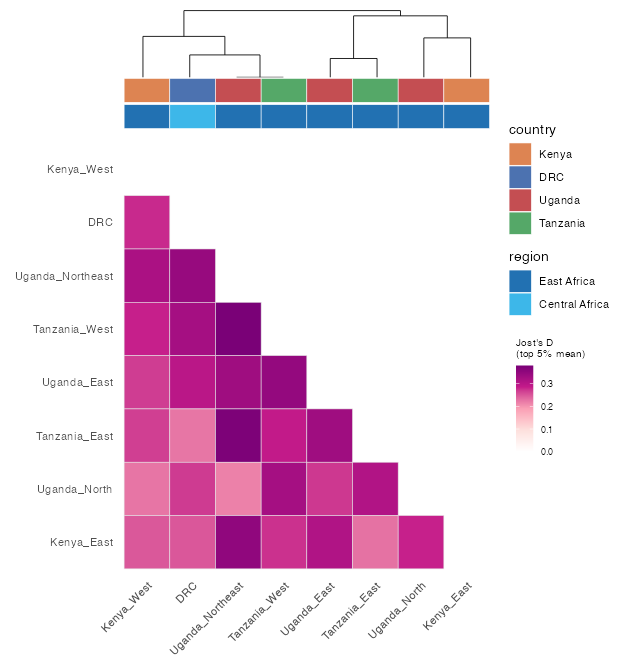

pop_diff() computes a per-SNP differentiation statistic
for every pair of metadata groups, from the full,
unpruned genotypes (LD-pruning throws away the differentiating
SNPs you want here): Jost’s D (jost_d()),
Nei’s Gst, Hedrick’s standardized
G′st, and Hudson’s Fst.
ps <- example_pop_structure("africa")
pd <- ps$pop_diff(group = "site", statistic = "jost_d") # per-SNP D for all site pairs
pdReading near-zero measures
Across the whole P. falciparum genome most SNPs barely differ between African populations, so a genome-wide mean differentiation looks close to zero even where real structure exists in a minority of loci. Options that surface it:
- summarise with
stat = "top_mean"(mean of the top few % of SNPs per pair) or"max"rather than"mean"; - apply a
trans = "sqrt"fill to the heatmap; - remember the differentiation lives in the loci —
top_differentiating_snps()and a per-SNP genome scan are the right lens, not the genome-wide average.
Nei’s Gst is the most deflated when within-group diversity is high; Jost’s D and Hedrick’s G′st are less so.
Everything in one table
pop_diff_table() gathers every statistic and summary per
group pair, side by side:
ps$pop_diff_table(group = "site")
#> a b n_snps jost_d_mean jost_d_top_mean jost_d_max gst_mean ...
#> 1 DRC Uganda_N 2000 0.040 0.268 0.628 0.029 ...
#> ...Triangle heatmap
plot_diff_heatmap() draws a lower-triangle heatmap with
the fill legend tucked in the empty corner, an optional clustering
dendrogram, and one or more metadata
annotation strips with custom colours:
ps$plot_diff_heatmap(
group = "site", statistic = "jost_d", stat = "top_mean",
annotate = c("country", "region"), # two annotation strips
annotate_colours = list(country = c(DRC = "#4C72B0", Kenya = "#DD8452",
Tanzania = "#55A868", Uganda = "#C44E52")))
Selecting markers
top_differentiating_snps() returns the most
differentiating SNPs, walking the pairwise comparisons round-robin so
each pair contributes its top loci. (This is exactly how the
"africa" example fixture is built.)
markers <- top_differentiating_snps(pd, 2000)Estimators follow Jost (2008), Nei & Chesser (1983), Hedrick
(2005), and Hudson et al. (1992) / Bhatia et al. (2013); see
?pop_diff for the references.